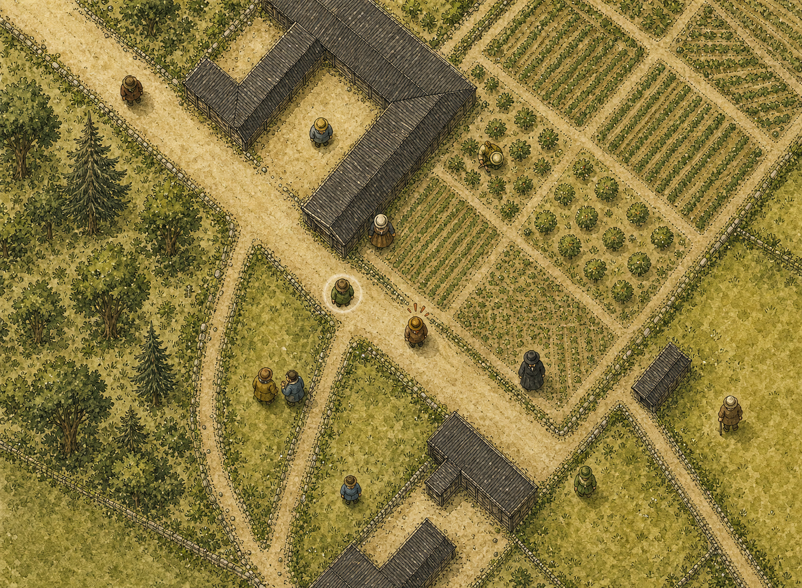
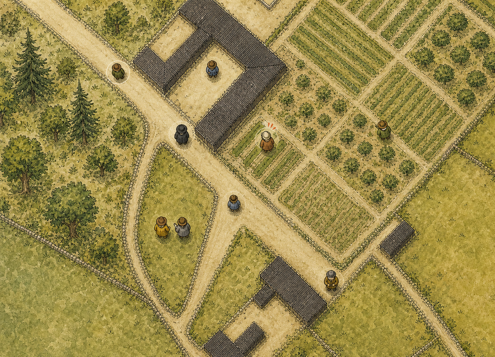

Focused follow-up after choosing Cycle CC D's character treatment and the 3x map-scale direction.
A richer character warmth

B flatter gameplay base

Preferred base: B for flatter map discipline; borrow a little of A's pawn warmth in the next pass.